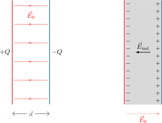
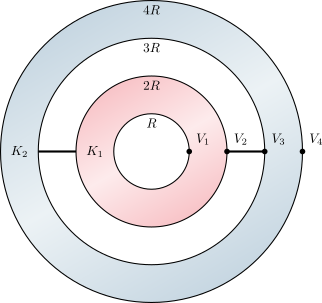
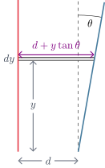
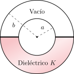

4.6 Dieléctricos en Condensadores#
Condensador de placas paralelas#
En un condensador de placas paralelas, el campo eléctrico original en el vacío es \(E_0 = \frac{\sigma}{\epsilon_0}\). Al introducir un dieléctrico, el campo disminuye a \(E = \frac{\sigma}{\epsilon}\), ya que \(\epsilon > \epsilon_0\), resultando en \(E < E_0\).
{kind=link}

Show code cell source
from IPython.display import display, HTML
simulacion_placas_html = """
<div style="border: 1px solid #e0e0e0; padding: 20px; border-radius: 8px; background-color: #f8f9fa; font-family: -apple-system, BlinkMacSystemFont, 'Segoe UI', Roboto, Arial, sans-serif;">
<h3 style="margin-top:0; color: #2c3e50;">Simulación 2D: Condensador de Placas Paralelas</h3>
<p style="font-size: 0.95em; color: #555; margin-bottom: 15px;">Modifica el área geométrica, la separación y el material dieléctrico para observar su impacto en la capacitancia y el campo eléctrico (asumiendo 10V constantes).</p>
<div style="display: flex; gap: 20px; flex-wrap: wrap; margin-bottom: 15px;">
<div style="flex: 1.5; min-width: 280px;">
<div style="margin-bottom: 8px;">
<label style="font-weight: 600; display: inline-block; width: 170px;">Área A (cm²): <span id="pp_val_A" style="font-weight: normal;">100</span></label>
<input type="range" id="pp_slider_A" min="10" max="500" step="10" value="100" style="width: 40%; vertical-align: middle;">
</div>
<div style="margin-bottom: 8px;">
<label style="font-weight: 600; display: inline-block; width: 170px;">Separación d (mm): <span id="pp_val_d" style="font-weight: normal;">5.0</span></label>
<input type="range" id="pp_slider_d" min="1" max="20" step="0.5" value="5" style="width: 40%; vertical-align: middle;">
</div>
<div>
<label style="font-weight: 600; display: inline-block; width: 170px; color: #6c757d;">Dieléctrico (κ): <span id="pp_val_k" style="font-weight: normal;">1.0</span></label>
<input type="range" id="pp_slider_k" min="1" max="10" step="0.1" value="1" style="width: 40%; vertical-align: middle;">
</div>
</div>
<div style="flex: 1; min-width: 220px; font-size: 0.95em; background: #fff; padding: 10px; border-radius: 6px; border: 1px solid #ccc;">
<div style="margin-bottom: 5px;"><b>Capacitancia C:</b> <span id="pp_val_C" style="color: #198754; font-weight: bold;">0</span> pF</div>
<div style="margin-bottom: 5px;"><b>Campo Eléctrico E:</b> <span id="pp_val_E" style="color: #dc3545; font-weight: bold;">0</span> V/m</div>
<div style="margin-bottom: 5px;"><b>Carga Q:</b> <span id="pp_val_Q" style="color: #0d6efd; font-weight: bold;">0</span> pC</div>
<div style="font-size: 0.8em; color: #777; margin-top: 5px;">*V = 10V (Batería conectada)</div>
</div>
</div>
<div style="text-align: center; position: relative;">
<canvas id="pp_canvas" width="600" height="350" style="background: white; border: 1px solid #ccc; border-radius: 4px; box-shadow: 0 2px 5px rgba(0,0,0,0.05); max-width: 100%;"></canvas>
</div>
</div>
<script>
(function() {
const canvas = document.getElementById('pp_canvas');
const ctx = canvas.getContext('2d');
const slider_A = document.getElementById('pp_slider_A');
const slider_d = document.getElementById('pp_slider_d');
const slider_k = document.getElementById('pp_slider_k');
const val_A = document.getElementById('pp_val_A');
const val_d = document.getElementById('pp_val_d');
const val_k = document.getElementById('pp_val_k');
const val_C = document.getElementById('pp_val_C');
const val_E = document.getElementById('pp_val_E');
const val_Q = document.getElementById('pp_val_Q');
const epsilon_0 = 8.854e-12;
const V = 10; // Voltaje fijo
function drawArrow(fromx, fromy, tox, toy, color, width) {
ctx.beginPath();
ctx.moveTo(fromx, fromy);
ctx.lineTo(tox, toy);
ctx.strokeStyle = color;
ctx.lineWidth = width;
ctx.stroke();
let angle = Math.atan2(toy - fromy, tox - fromx);
let dist = Math.hypot(tox - fromx, toy - fromy);
if (dist < 4) return;
let headlen = 8;
ctx.beginPath();
ctx.moveTo(tox, toy);
ctx.lineTo(tox - headlen * Math.cos(angle - Math.PI/7), toy - headlen * Math.sin(angle - Math.PI/7));
ctx.lineTo(tox - headlen * Math.cos(angle + Math.PI/7), toy - headlen * Math.sin(angle + Math.PI/7));
ctx.lineTo(tox, toy);
ctx.fillStyle = color;
ctx.fill();
}
function updateSim() {
let A_cm2 = parseFloat(slider_A.value);
let d_mm = parseFloat(slider_d.value);
let k = parseFloat(slider_k.value);
val_A.innerText = A_cm2;
val_d.innerText = d_mm.toFixed(1);
val_k.innerText = k.toFixed(1);
// Cálculos físicos
let A_m2 = A_cm2 * 1e-4;
let d_m = d_mm * 1e-3;
// C = k * e0 * A / d
let C = (k * epsilon_0 * A_m2) / d_m;
let C_pF = C * 1e12;
val_C.innerText = C_pF.toFixed(2);
// E = V / d
let E = V / d_m;
val_E.innerText = E.toFixed(0);
// Q = C * V
let Q = C * V;
let Q_pC = Q * 1e12;
val_Q.innerText = Q_pC.toFixed(2);
// Dibujo
ctx.clearRect(0, 0, canvas.width, canvas.height);
let cx = canvas.width / 2;
let cy = canvas.height / 2;
// Escalas visuales
// Distancia: 20mm max = 150px
let scale_d = 150 / 20;
let d_px = d_mm * scale_d;
// Ancho placa: proporcional a sqrt(A). Max A = 500 -> sqrt(500) aprox 22.3 cm.
// Hagamos que 22.3 cm sean 400px
let side_cm = Math.sqrt(A_cm2);
let scale_w = 400 / Math.sqrt(500);
let w_px = side_cm * scale_w;
let plate_thickness = 8;
let top_y = cy - d_px / 2;
let bottom_y = cy + d_px / 2;
// Dieléctrico
if (k > 1.0) {
ctx.fillStyle = `rgba(108, 117, 125, ${0.1 + (k/20)})`; // Se oscurece ligeramente con mayor k
ctx.fillRect(cx - w_px/2, top_y, w_px, d_px);
ctx.fillStyle = '#6c757d';
ctx.font = '14px Arial';
ctx.textAlign = 'center';
ctx.fillText(`k = ${k.toFixed(1)}`, cx, cy + 5);
}
// Campo Eléctrico (Flechas)
let num_arrows = Math.max(3, Math.floor(w_px / 40));
let arrow_spacing = w_px / num_arrows;
let E_intensity = E / (V / 1e-3); // Normalizado respecto a la d mínima (1mm)
let arrow_width = Math.max(1, E_intensity * 3);
let arrow_alpha = Math.max(0.3, E_intensity);
for(let i = 0; i <= num_arrows; i++) {
let x = (cx - w_px/2) + i * arrow_spacing;
// No dibujar la flecha central si está tapando el texto del dieléctrico
if (k > 1.0 && Math.abs(x - cx) < 30) continue;
drawArrow(x, top_y + plate_thickness/2 + 2, x, bottom_y - plate_thickness/2 - 2, `rgba(44, 62, 80, ${arrow_alpha})`, arrow_width);
}
// Placa Superior (Carga Positiva)
ctx.fillStyle = '#dc3545';
ctx.fillRect(cx - w_px/2, top_y - plate_thickness/2, w_px, plate_thickness);
ctx.fillStyle = 'white';
ctx.font = 'bold 16px Arial';
ctx.textAlign = 'center';
ctx.fillText("+++++", cx, top_y - 12);
// Placa Inferior (Carga Negativa)
ctx.fillStyle = '#0d6efd';
ctx.fillRect(cx - w_px/2, bottom_y - plate_thickness/2, w_px, plate_thickness);
ctx.fillStyle = '#0d6efd';
// ctx.fillText("-----", cx, bottom_y + 25);
}
slider_A.addEventListener('input', updateSim);
slider_d.addEventListener('input', updateSim);
slider_k.addEventListener('input', updateSim);
updateSim();
})();
</script>
"""
display(HTML(simulacion_placas_html))
Simulación 2D: Condensador de Placas Paralelas
Modifica el área geométrica, la separación y el material dieléctrico para observar su impacto en la capacitancia y el campo eléctrico (asumiendo 10V constantes).
Como el campo disminuye, para una misma carga \(Q\), la diferencia de potencial \(\Delta V = Ed\) se reduce, lo que implica que la capacitancia aumenta. La nueva capacidad \(C\) es:
Esferas conductoras concéntricas#
Consideremos un capacitor esférico con radios \(R\), \(2R\) y \(3R\), \(4R\), llenado con dos dieléctricos distintos: \(\epsilon_1 = K_1 \epsilon_0\) en la primera región y \(\epsilon_2 = K_2 \epsilon_0\) en la segunda. Este sistema equivale a dos condensadores esféricos en serie.
{kind=link}

Para el capacitor interior (\(C_1\)) y el exterior (\(C_2\)):
La capacitancia equivalente \(C_{eq}\) en serie se obtiene sumando sus inversos:
Condensador de placa inclinada#
Para un condensador de placas casi paralelas (área \(a^2\)), donde una placa está ligeramente inclinada con un ángulo pequeño \(\theta\), podemos integrar capacitores diferenciales en paralelo a lo largo del eje \(y\). El grosor del diferencial es \(dy\), y la separación varía como \(d + y\tan(\theta)\).
{kind=link}

Resolviendo la integral:
Como \(\theta \approx 0\), aproximamos \(\tan\theta \approx \theta\). Usando la serie de Taylor para el logaritmo \(\ln(1+x) \approx x - \frac{1}{2}x^2\), llegamos a:
Si \(\theta = 0\), se obtiene que \(C = C_0\), la capacitancia de las placas paralelas.
Condensador esférico parcialmente lleno#
Si un condensador esférico de radios \(a\) y \(b\) se llena hasta la mitad con un dieléctrico \(\epsilon = K \epsilon_0\), podemos tratarlo como dos condensadores esféricos en paralelo: el hemisferio superior vacío y el hemisferio inferior con dieléctrico.
{kind=link}

Como \(K>1\), se determina que la capacitancia equivalente es mayor a la del condensador esférico sin el dieléctrico, es decir, \(C_{\text{eq}} > C_{\text{esf}}\).